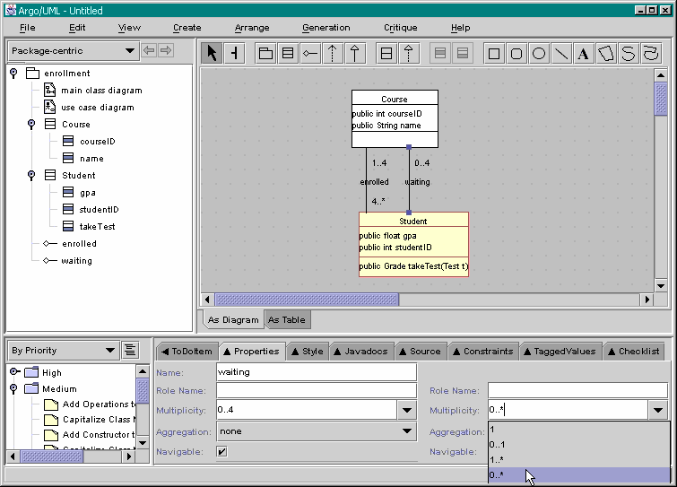

Previous step | Back to ArgoUML Tours | Next step
If you select the "waiting" association, and then select
the Properties tab in the Details pane (bottom-right),
in the Multiplicity field,
you can either type in the multiplicity you
want or select from the drop-down menu shown in the diagram below
(bottom-right).
Set the multiplicities for both associations as shown in the figure below.

Back to ArgoUML Tours
Back to ArgoUML Home